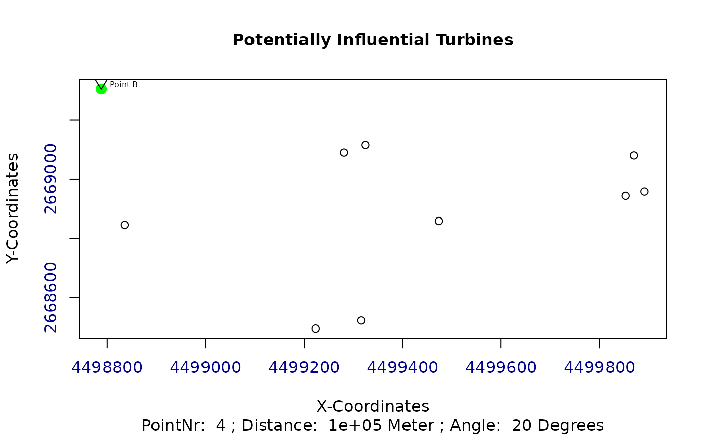
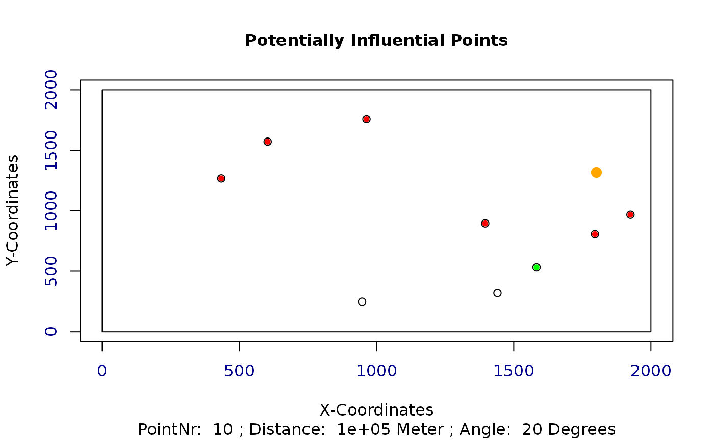

Calculate distances and angles of possibly influencing turbines
Source:R/get_dist_angles.R
get_dist_angles.RdCalculate distances and angles for a turbine and all it's potentially influencing turbines.
get_dist_angles(t, o, wkl, distanz, polYgon, plotAngles)
Arguments
| t | A matrix of the current individual with x and y coordinates |
|---|---|
| o | A numeric value indicating the index of the current turbine |
| wkl | A numeric value indicating the angle, at which no wake influences are considered. Default is 20 degrees. |
| distanz | A numeric value indicating the distance, after which the wake effects are considered to be eliminated. Default is 100km. |
| polYgon | A shapefile representing the considered area |
| plotAngles | A logical variable, which is used to plot the distances and angles. Default is FALSE |
Value
Returns a matrix with the distances and angles of potentially influencing turbines
See also
Other Wind Energy Calculation Functions:
barometric_height(),
calculate_energy(),
turbine_influences()
Examples
library(sp) library(raster) ## Exemplary input Polygon with 2km x 2km: polYgon <- Polygon(rbind(c(0, 0), c(0, 2000), c(2000, 2000), c(2000, 0))) polYgon <- Polygons(list(polYgon),1) polYgon <- SpatialPolygons(list(polYgon)) Projection <- "+init=epsg:3035" proj4string(polYgon) <- CRS(Projection); plot(polYgon, axes = TRUE)## Create a random windfarm with 10 turbines t <- as.matrix(cbind(x = runif(10, 0, raster::extent(polYgon)[2]), y = runif(10, 0, raster::extent(polYgon)[4]))) wnkl <- 20 distanz <- 100000 ## Evaluate and plot for every turbine all other potentially influencing turbines potInfTur <- list() for (i in 1:(length(t[,1]))) { potInfTur[[i]] <- get_dist_angles(t = t, o = i, wkl = wnkl, distanz = distanz, polYgon = polYgon, plotAngles = TRUE) }potInfTur#> [[1]] #> Ax Ay Bx By Cx Cy Laenge_C Laenge_B Laenge_A alpha betha gamma #> [1,] 0 0 1801.251 1317.151 0 0 0 0 0 0 0 0 #> #> [[2]] #> Ax Ay Bx By Cx Cy Laenge_C Laenge_B #> [1,] 602.9025 1571.513 947.1833 247.1033 602.9025 247.1033 1368.427 1324.410 #> [2,] 963.1458 1758.062 947.1833 247.1033 963.1458 247.1033 1511.043 1510.958 #> Laenge_A alpha betha gamma #> [1,] 344.28082 14.5715487 75.42845 90 #> [2,] 15.96246 0.6052782 89.39472 90 #> #> [[3]] #> Ax Ay Bx By Cx Cy Laenge_C #> [1,] 1801.2512 1317.1508 1440.636 319.2308 1801.2512 319.2308 1061.078 #> [2,] 1396.0386 895.3321 1440.636 319.2308 1396.0386 319.2308 577.825 #> [3,] 963.1458 1758.0616 1440.636 319.2308 963.1458 319.2308 1515.992 #> Laenge_B Laenge_A alpha betha gamma #> [1,] 997.9199 360.61487 19.868156 70.13184 90 #> [2,] 576.1013 44.59778 4.426617 85.57338 90 #> [3,] 1438.8308 477.49054 18.358947 71.64105 90 #> #> [[4]] #> Ax Ay Bx By Cx Cy Laenge_C Laenge_B #> [1,] 1801.251 1317.151 1925.46 966.7288 1801.251 966.7288 371.7841 350.422 #> Laenge_A alpha betha gamma #> [1,] 124.2087 19.5171 70.4829 90 #> #> [[5]] #> Ax Ay Bx By Cx Cy Laenge_C Laenge_B Laenge_A alpha betha gamma #> [1,] 0 0 433.8771 1267.607 0 0 0 0 0 0 0 0 #> #> [[6]] #> Ax Ay Bx By Cx Cy Laenge_C Laenge_B Laenge_A alpha betha gamma #> [1,] 0 0 602.9025 1571.513 0 0 0 0 0 0 0 0 #> #> [[7]] #> Ax Ay Bx By Cx Cy Laenge_C Laenge_B Laenge_A alpha betha gamma #> [1,] 0 0 1396.039 895.3321 0 0 0 0 0 0 0 0 #> #> [[8]] #> Ax Ay Bx By Cx Cy Laenge_C Laenge_B Laenge_A alpha betha gamma #> [1,] 0 0 963.1458 1758.062 0 0 0 0 0 0 0 0 #> #> [[9]] #> Ax Ay Bx By Cx Cy Laenge_C Laenge_B #> [1,] 1801.251 1317.151 1795.978 806.7497 1801.251 806.7497 510.4284 510.4011 #> Laenge_A alpha betha gamma #> [1,] 5.273682 0.5919855 89.40802 90 #> #> [[10]] #> Ax Ay Bx By Cx Cy Laenge_C Laenge_B #> [1,] 1801.251 1317.151 1583.073 531.1848 1801.251 531.1848 815.6865 785.966 #> Laenge_A alpha betha gamma #> [1,] 218.1785 15.51427 74.48573 90 #>